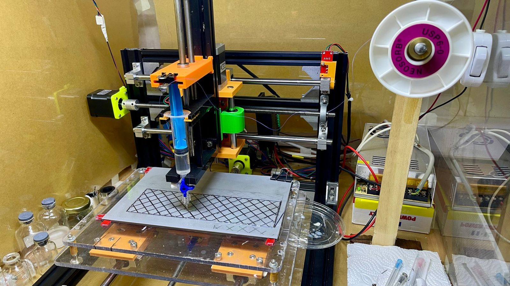
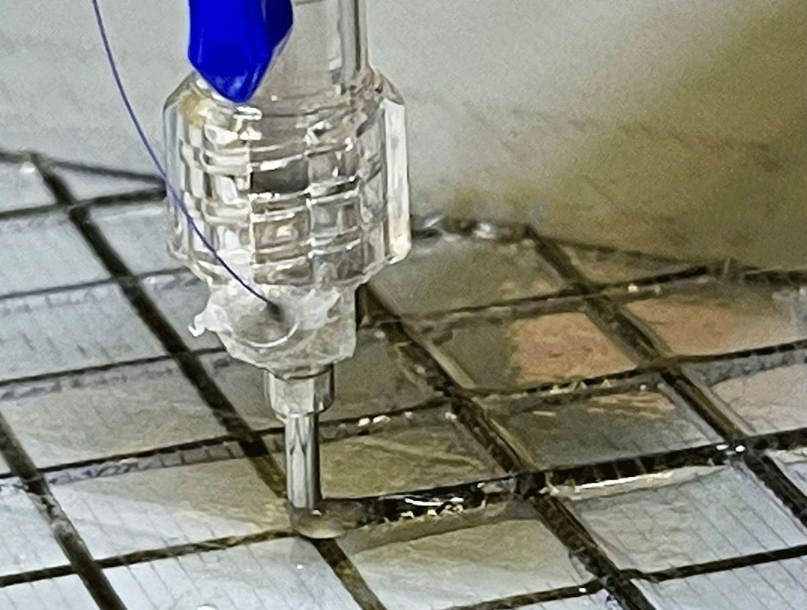
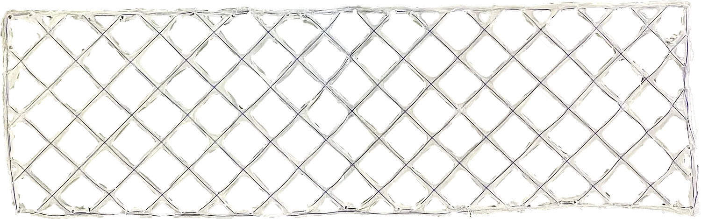
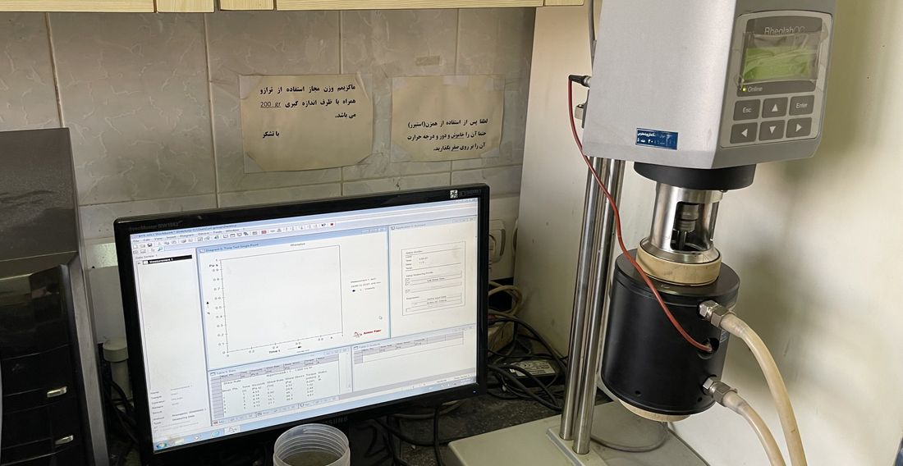
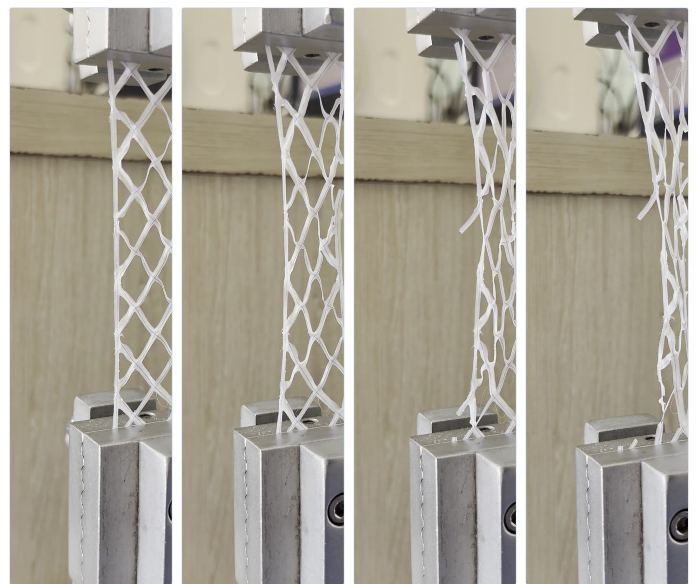
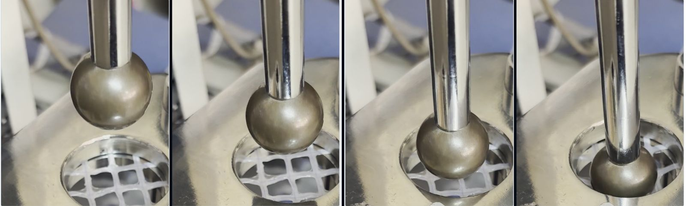
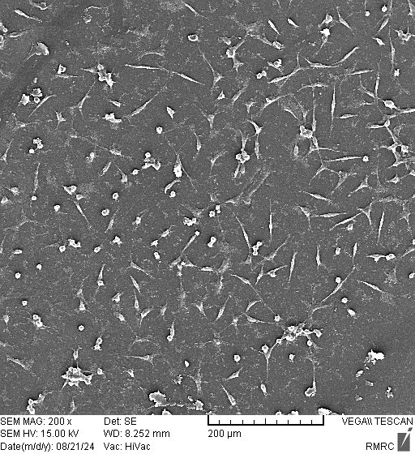
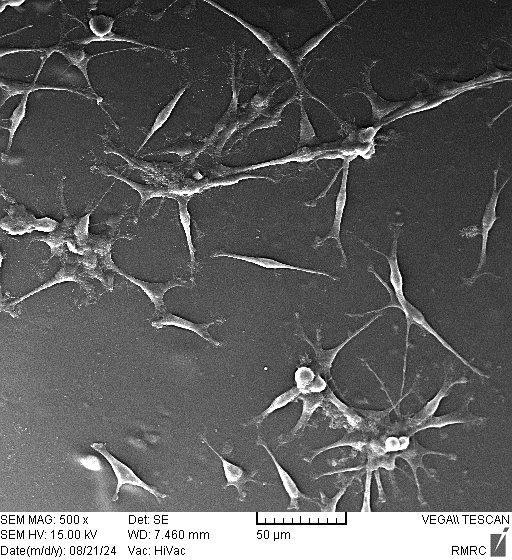
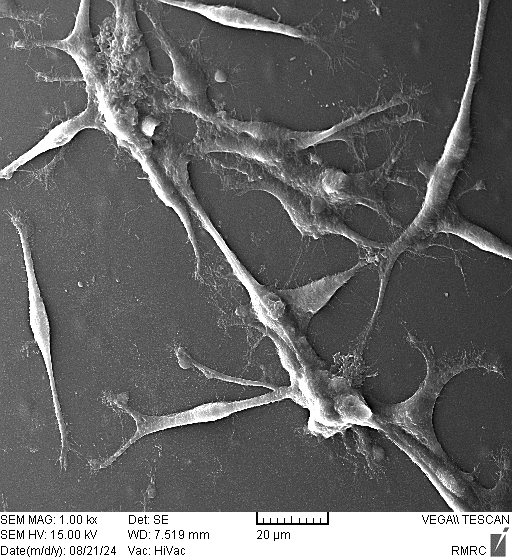

Surgical mesh reinforced with continuous PGA fibre
A biodegradable hernia mesh printed by direct ink writing. An absorbable PGA suture is laid into the centre of every PCL strand as it is printed, and a PVA–ZnO coating is written on with the same machine.
A mesh that is strong, then disappears
Hernia repair relies on a mesh that carries abdominal load while the tissue heals. Most meshes in use are permanent polypropylene. A biodegradable mesh avoids a lifelong implant, but biodegradable polymers such as polycaprolactone (PCL) are weak on their own, and infection after implantation remains a leading cause of failed repairs.
The aim was to keep PCL as the printable, slowly degrading matrix, supply strength with a continuous absorbable fibre placed exactly along the print path, and add a zinc oxide coating for antibacterial potential, all with one machine.
- Matrix
- PCL dissolved in chloroform
- Reinforcement
- Continuous polyglycolic acid (PGA) suture, USP 3-0 (≈200 µm), embedded at the strand centre
- Coating
- One-sided PVA, crosslinked in glutaraldehyde vapour, with 1 or 5 wt% ZnO
- Pattern
- Diamond 45°, 15% infill, 0.2 mm layers
- Nozzle
- 12G (2.1 mm)
Fibre laid in while the ink is written
The lab's DIW printer was adapted for continuous-fibre printing: a guide feeds the PGA suture under controlled tension into the nozzle, so it leaves embedded in the centre of each PCL strand.



The PVA–ZnO coating was deposited on one side with the same DIW printer, so no separate coating step was needed. Four conditions were compared:
| Group | Composition |
|---|---|
| PCL | Neat PCL, reference |
| G1 | PCL + continuous PGA, uncoated |
| G2 | G1 + PVA coating with 1 wt% ZnO |
| G3 | G1 + PVA coating with 5 wt% ZnO |
From ink to cells
| Property | Method | Standard · instrument |
|---|---|---|
| Ink flow | Rotational rheometry, power-law fit | Anton Paar RheolabQC, CC27 |
| Chemistry | ATR-FTIR spectroscopy | Bruker Tensor 27 |
| Wettability | Water contact angle, sessile drop | Sessile drop |
| Tensile behaviour | Uniaxial tension, 200 × 30 mm meshes | ASTM D882 · ISO 13934-1 |
| Burst resistance | Ball burst, 200 × 60 mm meshes | ASTM D3787-07 |
| Cytocompatibility | MTT with L929 fibroblasts, days 1, 3, 7 | ISO 10993-5 |
| Cell morphology | Scanning electron microscopy | TESCAN VEGA |



Stronger, stiffer, cell-friendly
Embedding the PGA fibre raised tensile strength by 47–75% over neat PCL, and the 1% ZnO coating nearly tripled the modulus. Every group resisted more than the 30 N burst force recommended for surgical meshes.
Ink rheology · power-law fit
| Ink | n | K (Pa·sn) | Behaviour |
|---|---|---|---|
| PCL in chloroform | 0.955 | 4.65 | Near-Newtonian, 3.45–4.02 Pa·s |
| PVA in water | 0.776 | 7.68 | Shear-thinning |
Surface & chemistry
| Water contact angle | PCL 75.9° · PVA 74.0° · PVA+ZnO 73.9° |
| ATR-FTIR | New Zn–OH peak at 3594 cm⁻¹ |



FIG. 12 · L929 fibroblasts on the PVA–ZnO coated meshes (SEM, TESCAN VEGA). Cells attach and spread with long processes. In the MTT assay all groups kept proliferating over seven days, and at day 7 viability against the same-day control was 75% for G2 and 84% for G3, above the 70% threshold of ISO 10993-5.
What this study does not show yet
- Antibacterial
- No direct test yet; the antibacterial effect of ZnO is inferred from literature
- Degradation
- Mass and strength loss over time not yet measured
- Scope
- In vitro only, with n = 3–4 per group
- Mechanics
- At 15% infill the mesh is far weaker than polypropylene; measured G1 modulus (32.5 MPa) sits below the rule-of-mixtures estimate (86.7 MPa), pointing at the fibre–matrix interface
Planned next steps:
- Zone-of-inhibition and MIC tests against S. aureus and E. coli.
- Degradation in PBS at 37 °C over 1, 3, 6 and 12 months.
- Higher infill to approach clinical strength targets, and ZnO tuned between 0.5 and 3 wt%.
- An in vivo rat abdominal-wall model, subject to ethics approval.
What came out of it
- M.Sc. thesis, Tarbiat Modares University, 2026.
- Journal manuscript submitted to Biomedical Materials & Devices.
- First report, to my knowledge, of a PCL–PGA surgical mesh made by DIW with the continuous fibre embedded along the extrusion path, and coated on the same machine.